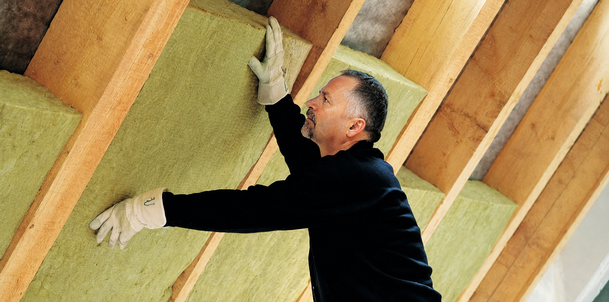
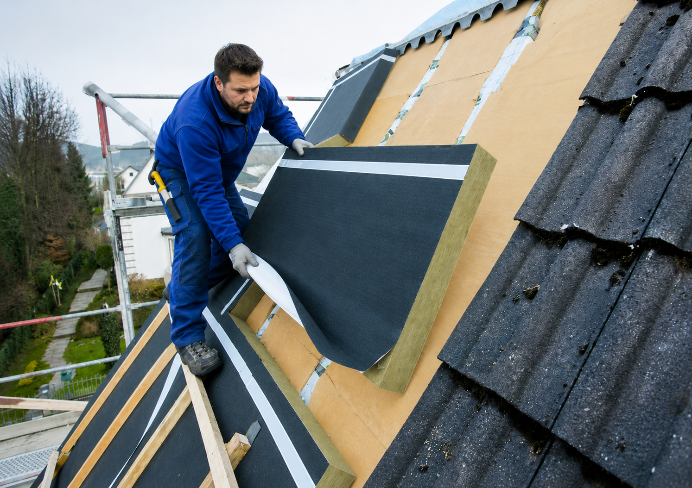
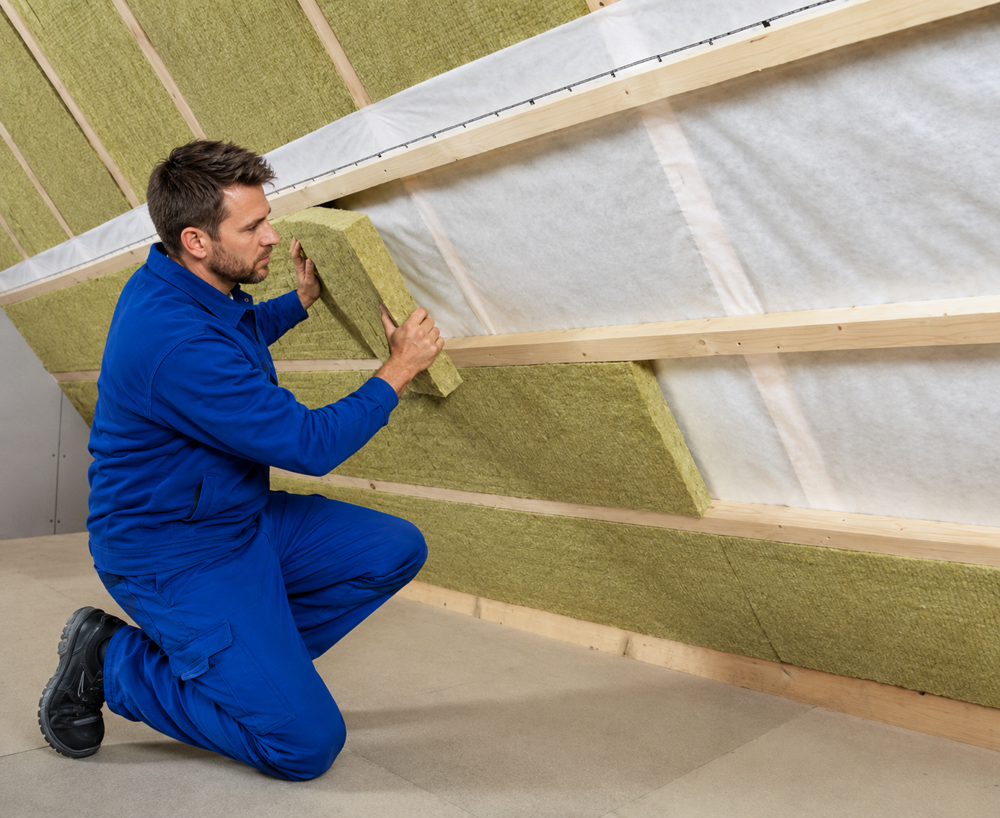
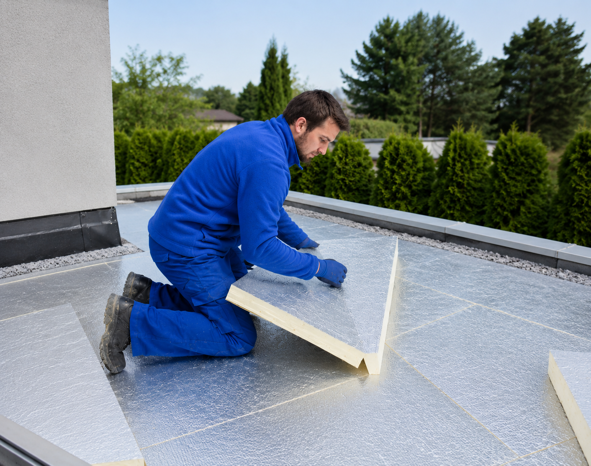

Weniger Heizkosten, mehr Wohnkomfort – die richtige Dämmung für Ihr Dach, fachgerecht ausgeführt.
Ein ungedämmtes oder schlecht gedämmtes Dach kann 20–30 % des gesamten Wärmeverlusts eines Hauses verursachen. Mit einer fachgerecht ausgeführten Dachdämmung senken Sie Ihre Heizkosten dauerhaft – und erfüllen die Anforderungen des Gebäudeenergiegesetzes (GEG).
[FIRMENNAME] berät Sie zur passenden Dämmmethode und unterstützt bei der KfW/BAFA-Förderantragstellung (BEG – Bundesförderung für effiziente Gebäude).

Wir prüfen Ihren Dachstuhl, besprechen Ihre Ziele (Energieeinsparung, Wohnausbau) und empfehlen die passende Dämmmethode.
Detailliertes Angebot mit Materialspezifikationen; auf Wunsch unterstützen wir beim KfW/BAFA-Antrag.
Fachgerechte Montage der Dämmung – wärmebrückenfrei, luftdicht, nach DIN 4108.
Gemeinsame Abnahme und Übergabe aller Unterlagen für die Förderung.
Die richtige Methode hängt davon ab, ob Ihre Eindeckung erneuert wird und ob Sie das Dachgeschoss ausbauen möchten.
Dämmmaterial wird zwischen die Dachsparren eingebracht – von innen, ohne die Eindeckung anzutasten. Die häufigste Methode bei Sanierungen, wenn der Dachstuhl zugänglich ist und die Eindeckung noch in gutem Zustand ist.
Geeignet wenn: Eindeckung in Ordnung, kein Neueindeckung geplant, Dachstuhl von innen zugänglich.
Materialien: Mineralwolle, Holzfaserdämmung, Zellulose.
Dämmplatten werden von außen auf die Sparren gelegt – ideal, wenn ohnehin eine Neueindeckung geplant ist. Das Ergebnis: eine durchgehende, wärmebrückenfreie Dämmschicht. Der Dachstuhl bleibt von innen sichtbar.
Geeignet wenn: Neueindeckung ist ohnehin geplant (Gerüst steht bereits).
Materialien: PIR/PUR-Hartschaum (sehr gute Dämmwirkung bei geringer Dicke).

Ergänzende Dämmschicht unterhalb der Sparren – meist als Aufstockung bei bereits gedämmten Dächern, um den Gesamt-U-Wert zu verbessern und verbleibende Wärmebrücken zu schließen.

Beim Warmdach liegt die Dämmung direkt unter der Abdichtungsbahn – Standardlösung für die meisten Flachdächer. Beim Umkehrdach liegt die Dämmung oberhalb der Abdichtung und schützt diese vor Temperaturschwankungen und UV. Wir beraten Sie, welcher Aufbau für Ihr Flachdach sinnvoll ist.

Das hängt vom Ausgangszustand ab. Ein komplett ungedämmtes Dach kann für 20–30 % des gesamten Wärmeverlusts verantwortlich sein. Mit einer fachgerechten Dämmung auf aktuellen GEG-Standard lassen sich die Heizkosten in diesem Bereich deutlich reduzieren. Eine konkrete Einschätzung geben wir Ihnen nach der Besichtigung.
Ja. Energetische Sanierungsmaßnahmen an der Gebäudehülle – dazu zählt die Dachdämmung – werden über das BEG-Programm von BAFA und KfW gefördert. Voraussetzung ist u.a. die Einbindung eines Energieberaters. Wir helfen Ihnen bei der Organisation.
Das hängt von Ihrem Dachzustand, geplanten Maßnahmen (Neueindeckung, Wohnausbau) und Budget ab. Wir empfehlen nach der Besichtigung – ohne Druck in eine bestimmte Richtung.